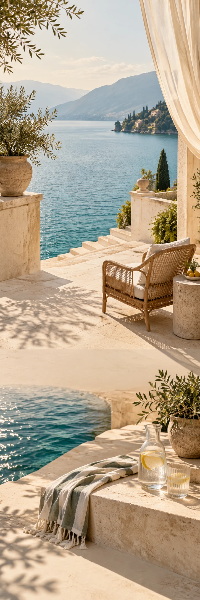

CASA LENTO
Reizen & hotelsSeizoenscampagne
A SLOWER KIND OF STAY
Blijf nog
heel even.
Lange ochtenden. Open ramen. Nergens haast.
Het licht kruipt over de vloer. Buiten beweegt het water. Je boek ligt nog open van gisteren. Soms is een ander tempo alles wat je zoekt.
Ontdek Casa LentoEen paar dagen.
Helemaal daar.
Lange ochtenden. Open ramen. Nergens haast.
Ontdek Casa Lento